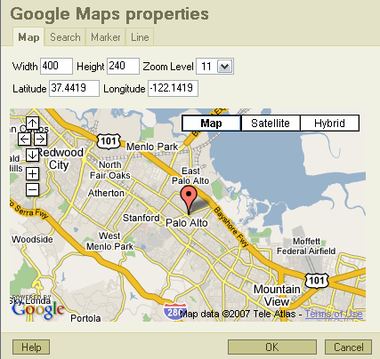
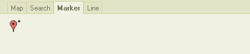

Esta ventana permite insertar y modificar Mapas Google en FCKeditor
Pulsa el botón en la barra de botones de FCKeditor, y se abrirá una ventana para configurar los parámetros del mapa que quieres mostrar.




Con estas casillas puedes controlar las dimensiones del mapa que aparecerá en la página web. También es posible redimensionar directamente el elemento que aparece durante la edición de la página para ajustar las dimensiones.
Permite controlar el nivel de zoom del mapa. Puede usarse el desplegable superior o los controles + y - incrustados en el mapa.
Estas casillas establecen cual será el centro del mapa. También es posible modificarlo mediante las flechas que aparecen incrustadas en el mapa inferior o incluso hacer click y desplazarlo.
Escribe aquí la dirección que deseas buscar, y si se encuentra el mapa se centrará automáticamente en esas coordenadas y un marcador aparecerá en el punto. Para poder hacer búsquedas adecuadamente, recuerda que hay que separar cada elemento con una coma: "calle, ciudad, provincia, país"
Al pulsar este botón podrás añadir un marcador en cualquier punto del mapa. Se abrirá su ventana de propiedades y ahí puedes ajustar el texto o borrar el marcador. Puedes ajustar la posición de un marcador arrastrandolo.

Este es el texto que se mostrará cuando los visitantes hagan click en el marcador (puedes probarlo en la pestaña Mapa).
Aquí puedes dibujar una linea o ruta sobre el mapa, y ajustar cada uno de sus puntos mediante los minimarcadores que se muestran mientras se está aquí.
Cuando cierres la ventana, se añadirá en el contenido del editor un elemento para representar el mapa. Este elemento tendrá las dimensiones apropiadas con un borde negro alrededor suya y el logo de Google Maps en el centro.
Puedes hacer click para seleccionarlo y arrastrar una de las esquinas para redimensionarlo, pero recuerda que el centro del mapa y la posición del marcador no cambiarán, por lo que puede ser conveniente abrir de nuevo la ventana de edición para verificar que todo está bien.

Puedes incluir en la página tantos mapas como desees, el funcionamiento no está limitado a un número determinado de mapas.
Para editar un mapa que ya existe simplemente lo puedes seleccionar y hacer click otra vez en el botón, o hacer click con el botón derecho y escoger la opción ahí de editar el mapa, o hacer doble click en él. Lo que más te guste.
Existe un problema por el cual si intentas hacer una previsualización en FCKeditor de una página que contiene un mapa, la previsualización no se mostrará normalmente.
Si ves que este plugin es útil, considera la opción de realizar una donación para que pueda ser mejorado, cualquier cantidad ayudará a que el desarrollo siga adelante.
Si necesitas alguna funcionalidad especial para este plugin, o si necesitas cualquier otro plugin para FCKeditor, contacta conmigo y hablaremos sobre el tema
FCKeditor © FredCK.com
Google, Google Maps y el API de Google Maps son propiedades de Google.